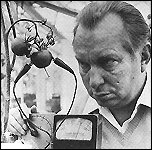

CHAPTER
SIX
The Lord of the Manor
The least free person is the person who
cannot reveal his own acts and who protests the revelation of the improper acts of others.
On such people will be built a future political slavery.
- L. RON HUBBARD,
"Honest People Have Rights Too," 1960
Saint Hill, a sandstone, Georgian manor house, built
in 1733, was an unlikely setting for the red-headed maverick from Montana.  Upon
his arrival, Hubbard set up the Scientology World-wide Management Control Center, though
he told the East Grinstead newspapers he had retired to England to do horticultural
experiments and to work in theoretical physics. He claimed to be treating plants with
radioactivity. Hubbard became a regular contributor to Garden News, even
demonstrating his horticultural findings on English television. His experiments consisted
in part of using an E-meter to measure a plant's response to threats in its environment.
There is an amusing newspaper picture (right) which shows Hubbard gazing intently
at a tomato, still on the vine, with two E-meter crocodile clips and a nail jabbed into
it. 1
With a typical lack of modesty Hubbard announced his
horticultural innovations to Scientologists, claiming, in the third person, that "Ron
has already created everbearing tomato plants and sweet corn plants sufficiently
impressive to startle British newspapers into front page stories about this new
wizardry." How Hubbard knew the tomatoes were "everbearing" after only a
few months is not known. Hubbard's stated purpose for this project was "to reform the
world food supply." 2
At the end of the 1959 growing season, Hubbard
introduced "Security Checking." The E-meter was now to be used to discover
"overts" committed by Scientologists. An "overt" is basically a
transgression against a moral code. In later times Security Checking was renamed
"Integrity Processing" or "Confessional Auditing," linking the
procedure to the Confessional of the Christian Church. Rather than a simple request to
confess, the Preclear is asked a series of precise questions (often several hundred), and
must describe very exactly any overt discovered during the process. The E-Meter is used
throughout to try to ensure there are no evasions. The Auditor carefully notes the details
of any overt he has "pulled" from the Preclear. 3
In theory, Security Checking could be applied either
as a Confessional, in which case the replies obtained were said to be confidential, or
during the course of an investigation, in which case they were not. In practice, the
Confessional has proved to be a double-edged procedure, sometimes giving genuine relief,
but always harboring the potential future use of the material as blackmail. An
enthusiastic convert is willing to expose even his most tortured secret. Should he become
disillusioned by Church practices, he will keep quiet for fear that his confession will be
disclosed.
Hubbard's oldest child, L. Ron Hubbard, Jr., or
"Nibs," had been a leading light in Scientology since 1952, when, at the age of
eighteen, he became Executive Director of the Washington Scientology Church. He was even
one of the handful of people who had given "Advanced Clinical Courses" in
Scientology. His father had described him as "one of the best auditors in the
business." In November 1959, Hubbard senior ordered that the staffs of all
Scientology Orgs be given an E-meter check. On November 23, Nibs left the Washington Org,
and the Church of Scientology. Hubbard said his son was unable to "face an
E-meter," and issued a Bulletin saying the cause of all "departures, sudden and
relatively unexplained" was unconfessed overts. 4 According to Nibs, his departure from the Church was actually
due to inadequate remuneration. Nibs later suggested that his father needed to confess his
overts, and for many years Nibs was his father's most outspoken opponent. Hubbard senior
disowned Nibs completely in 1983. Nibs accepted a financial settlement from the
Scientologists after his father's death in 1986, agreeing not to make further comment.
The idea that unrevealed transgressions cause
departures from the Church is now deeply embedded in Scientology theory. No one who leaves
has a chance to explain his departure. Scientologists are sure that the person must have
"overts" against Scientology, therefore nothing a former member says can be
trusted, so it is not worth listening to them.
In March 1960, Have You Lived Before This Life? A
Scientific Survey was published. The book is a jumble of Scientology auditing
sessions, where Preclears related fragments of their "past life" experiences. No
attempt was made to verify any of the incidents. Freudians would have a field day with the
contents.
That month, in an internal memo to his press officer,
Hubbard also commented on the public image he wished to create for himself. In every press
release it was to be made clear that he was an atomic scientist, a researcher, rather than
a spiritualist or a psychiatrist. 5
Hubbard's major research at the time was into
"Security Checking," and he was looking for applications for this new
"technology." Hubbard saw potential political uses, and sent a Bulletin to all
South African Auditors called "Interrogation (How to read an E-Meter on a silent
subject)," which reads in part:
When the subject placed on a meter will not
talk but can be made to hold the cans (or can be held while the cans are strapped to the
soles or placed under the armpit . . .) [sic], it is still possible to obtain full
information from the subject.
This interrogation was recommended for tracing the
true leaders of riots:
The end product is the discovery of a
terrorist, usually paid, usually a criminal, often trained abroad. Given a dozen people
from a riot or strike, you can find the instigator .... Thousands are trained every year
in Moscow in the ungentle art of making slave states. Don't be surprised if you wind up
with a white.
In April 1960, the Bulletin "Concerning the
Campaign for the Presidency" was published recommending that Richard M. Nixon
"be prevented at all costs from becoming president." Hubbard blamed Nixon for a
distinctly unfriendly visit to the Washington Scientology Church by "two members of
the United States Secret Service," which had upset Mary Sue Hubbard.
Scientologists were offered shares in the
"Hubbard Association of Scientologists Limited," registered in England, for £25
each that June. When the HASI Ltd. failed to obtain nonprofit status in England, the
shares were bought back, for a shilling each and a life-membership in Scientology, which
was later cancelled. 6
Also in June, the "Special Zone Plan - The
Scientologists Role in Life" was promulgated by Hubbard. It recommended that
Scientologists who were not on Church staff achieve influence in the society at large,
by taking positions next to the high and mighty. "Don't bother to get elected. Get a
job on the secretarial staff or the bodyguard," Hubbard advised.
The secretary or bodyguard would then use Scientology
to transform the organization they had joined. These Scientologists would be part of a
network, reporting back to the project's administrator; as Hubbard put it, "If we
were revolutionaries this HCO Bulletin would be a very dangerous document."
The Special Zone Plan was absorbed into a new Church
"Department of Government Affairs" within weeks of its inception. In the Policy
Letter announcing this move Hubbard said, "The goal of the Department is to bring the
government and hostile philosophies or societies into a state of complete compliance with
the goals of Scientology. This is done by high level ability to control, and in its
absence, by low level ability to overwhelm. Introvert such agencies. Control such
agencies."
Hubbard not only defined the sinister and covert
objective of the Department of Government Affairs, but also delineated the policy
Scientology has rigorously followed to this day toward any perceived threat: "Only
attacks resolve threats .... If attacked on some vulnerable point by anyone or anything or
any organization, always find or manufacture enough threat against them to sue for peace
.... Don't ever defend. Always attack."
During a visit in October 1960, Hubbard again gave his
observations on the situation in South Africa: "There is no native problem. The
native worker gets more than white workers do in England! .... The South African
government is not a police state. It's easier on people than the United States
government!" 7
Scientology made the headlines in England when
headmistress Sheila Hoad was accused of giving "Death Lessons" to her young
pupils. For twenty minutes a day, her small prep school students were asked, among other
things, to close their eyes and imagine they were dying, and then imagine they had turned
to dust and ashes. After the story went to the press, Miss Hoad resigned. 8
In the Spring of 1961, Hubbard expanded his Special
Zone Plan, by introducing the Department of Official Affairs, "the equivalent of a
Ministry of Propaganda and Security." The Department was to create "Heavy
influence through our own and similarly minded groups on the public and official
mind," and "A filed knowingness [sic] about the activities of friends and
enemies." 9
On March 24, Hubbard launched the Saint Hill Special
Briefing Course (or, inevitably, "SHSBC"). Students arrived from all over the
world to hear him lecture on new techniques in the Saint Hill chapel. One "technical
breakthrough" followed another, and eventually the Briefing Course came to consist of
over 300 taped lectures (most delivered during this period). All of Hubbard's recorded
lectures, some 3,500 of them, have more recently been designated "religious
scriptures" by his Church. Even the most dedicated of Scientologists can not have
heard them all, but about 600 tapes are still used in courses.
Hubbard was a remarkable lecturer. A woman close to
him in the 1950s, who thought he was a fraud even then, says he was quite hypnotic. He
raced from one idea to another, illustrating his talks with embroidered stories from his
life (and sometimes his previous lives). He effused good humor, and spoke with
apparent ease, usually without notes. There is nothing dry or academic about his lectures.
He was an accomplished comedian, especially if you knew the "in" jokes, many
about his pet hate, psychiatry.
On April 7, 1961, Hubbard published the
"Johannesburg Security Check," which he described as the "roughest security
check in Scientology." An amended form is still in use, and referred to by
Scientologists as the "Jo'burg."
The security check began with a series of nonsense
questions, such as, "Are you on the moon?" and "Am I an ostrich?" to
ensure that the recipient's E-meter response was normal. Then there were a hundred
questions. They covered sexual activities thoroughly, with questions such as:
Have you ever committed adultery?
Have you ever practiced Homosexuality?
Have you ever slept with a member of a race of another color'?
Senator Joseph McCarthy and his House Un-American
Activities Committee were long gone, but Hubbard was still inflamed with anti-Communist
fervor, and the sec-check was interspersed with questions about Communism, such as:
What is Communism?
Do you feel Communism has some good points?
The "Jo'burg" covered all manner of
wrongdoing, from simple theft to "illicit Diamond buying." It also asked,
"Have you ever been a newspaper reporter?" A cardinal sin to Hubbard. At the end
of the security check a series of fourteen questions designed to ensure the recipient's
loyalty to Hubbard and his organization was asked, among them:
Have you ever injured Dianetics or
Scientology?
Have you ever had unkind thoughts about LRH [Hubbard]?
Have you ever had unkind thoughts about Mary Sue [Hubbard]?
Do you know of any secret plans against Scientology?
Throughout 1961, additional Security Checks poured out
of the church. There was even one for children. Hubbard ordered that "All
Security Check sheets of persons Security Checked should be forwarded to St. Hill."
10
Hubbard was assembling a comprehensive set of
intelligence files on Scientologists with their willing assistance, as well as on supposed
enemies without their knowledge. The procedure has been refined, and remains to the
present day. The Scientology Church keeps a file on everyone who has ever taken a course
or even had a single hour of counseling. Scientologists are not allowed to see the
contents of their own confessional files, so cannot correct any errors.
The most elaborate Sec Check was for the "Whole
Track" (the whole "Time-Track," "past lives" included), and
consisted of over 400 questions. It was written by a couple devoted to Hubbard, and was
approved by the man himself. A few sample questions:
Have you ever warped an educational system?
Have you ever destroyed a culture?
Have you ever blanketed bodies for the sensation kick?
Have you ever bred bodies for degrading purposes?
Did you come to Earth for evil purposes?
Have you ever deliberately mocked up an unconfrontability?
Have you ever torn out somebody's tongue?
Have you ever been a professional critic?
Have you ever had sexual relations with an animal, or bird?
Have you ever given God a bad name?
Have you ever eaten a human body?
Have you ever zapped anyone?
Have you ever been a religious fanatic?
Have you ever failed to rescue your leader? 11
Any wrongdoing discovered during the questioning would
be traced back to "earlier similar incidents." It must have taken months to
check and recheck all 400 questions. However, it was not very useful for intelligence
gathering. You could hardly threaten to expose a person for "zapping" someone 20
trillion years ago. Security Checks were soon limited to "this lifetime." 12
Hubbard even tried to extend Security Checking into
the outside world, by advising Scientologists to set up a "Citizens' Purity
League" in their area. The Scientologists would Sec Check local officials and the
police. An attempt at this was made in Melbourne, Australia, which was soon to become a
very dangerous place indeed for Scientology. 13
On August 13, 1962, in between lectures at Saint Hill,
Hubbard again offered Scientology to the American government. The FBI Communist Activities
Department had ceased to exist, and Hubbard decided to go right to the top. He wrote to
President Kennedy. 14
FOOTNOTES
1. Technical Bulletins of
Dianetics & Scientology vol.4, p.29; What Is Scientology?, p.142; East
Grinstead Courier, 16 August 1959; Garden News, 8 April 1960; Dr.
Christopher Evans, Cults of Unreason, pp.72f; Sunday Mirror, 28 July
1968
2. Technical Bulletins of
Dianetics & Scientology vol.3, p.522
3. Technical Bulletins of
Dianetics & Scientology vol.3, pp.555 & 557; vol. 12, p.245ff
4. Professional Auditors
Bulletin 74, "Washington Bulletin no.1," 6 March 1956 (only in original); Technical
Bulletins of Dianetics & Scientology vol.2, p.474; vol.4 p.11
5. Vol 25. p. 4617 of
transcript of Church of Scientology of California vs. Gerald Armstrong, Superior
Court for the County of Los Angeles, case no. C 420153.
6. HASI share certificate;
Foster report, para 71
7. Technical Bulletins of
Dianetics & Scientology vol.4 p.161
8. Wallis, The Road to
Total Freedom, p.191; Cooper, The Scandal of Scientology, p. 102
9. Organization Executive
Course, vol. 7 p. 487
10. Technical Bulletins
of Dianetics & Scientology vol.4 p.378
11. Technical Bulletins
of Dianetics & Scientology vol.4 p.337
12. Technical Bulletins
of Dianetics & Scientology vol.12, p.245ff.
13. Wallis, p.202; HCO
Executive Letter, 14 April 1961
14. The Findings on the
U.S. Food and Drug Agency [sic, should be "Administration"], The
Department of Publications World Wide, East Grinstead, CSC, 1968 |